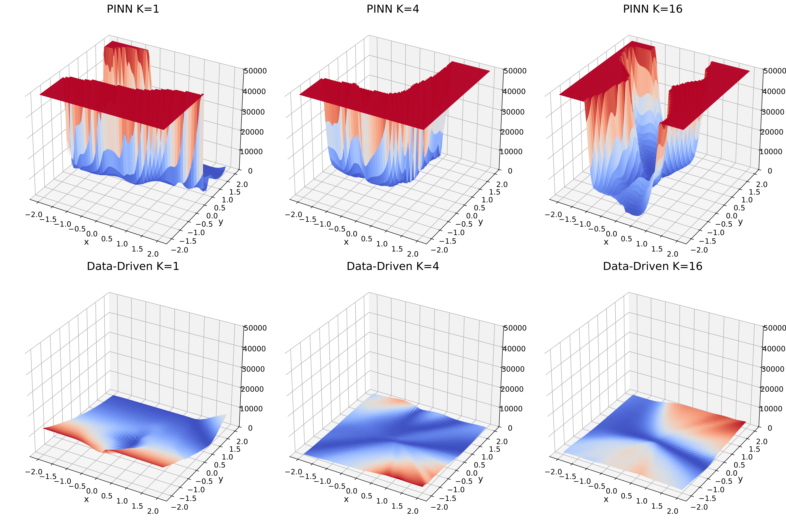

03 / course project · fall 2025
AI in the Sciences and Engineering
Course project at ETH Zürich, covering physics-informed neural networks, Fourier neural operators, and geometry-aware operator transformers.
download report ↗
Overview
The project examined three applications of machine learning to scientific computing. First, physics-informed and data-driven multilayer perceptrons were compared on the Poisson equation, with particular attention to their loss landscapes as problem complexity increased.
Second, a Fourier neural operator was trained to approximate an unknown dynamical system. The model was evaluated across spatial resolutions, trained on multiple time-step pairs, and fine-tuned on an unseen distribution. Third, a geometry-aware operator transformer was tested on an elasticity problem using random token sampling and a dynamic-radius neighbourhood strategy.
The experiments showed that the PINN became increasingly difficult to optimise at higher frequencies, while the data-driven model maintained lower error on the tested solutions. The Fourier neural operator generalised across time and resolution, although its performance degraded away from the training resolution. For the geometry-aware operator transformer, reducing the number of tokens lowered accuracy but retained the overall behaviour of the operator.
PINNsFourier neural operatorsscientific machine learningPyTorch